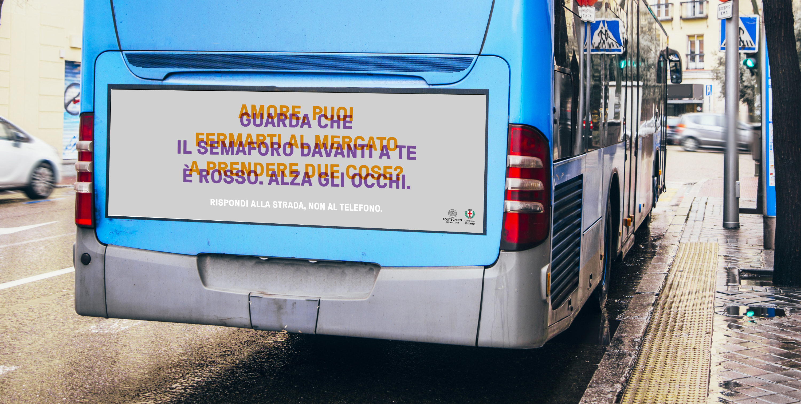
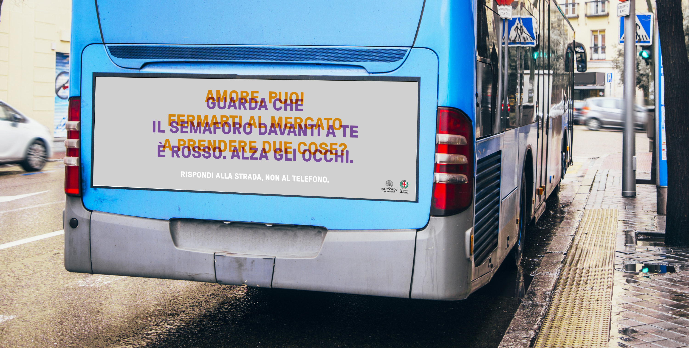
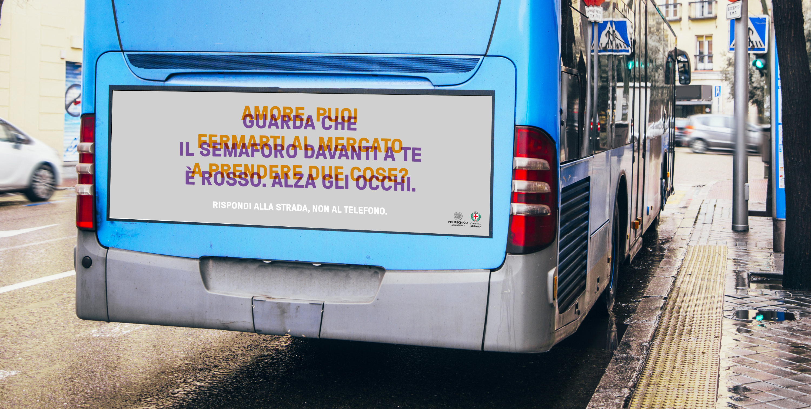

Video "Answer to the road. Not the telephone."

 

Billboards part of the campaign
Video "Answer to the road. Not the telephone."

Billboards part of the campaign
Social advertisign campaign
Answer to the road.
Not the telephone.
We collaborated with Milano's Polizia Locale to create a social advertisign campaign to discourage the use of telephones while driving.
We both filmed a video and designed a series of billboards with the aim of making people reflect on the effects of taking their attention off the road.
Laboratorio di Progetto della Comunicazione Visiva
Proff. L. Bellavita, L. Carbone, M. Galbiati
A.A. 2018/2019
Project by:
Marta Sironi, Matilde Balestri, Sara Davì, Tea Firmo,
Judite Gariso, Mai Yuxin